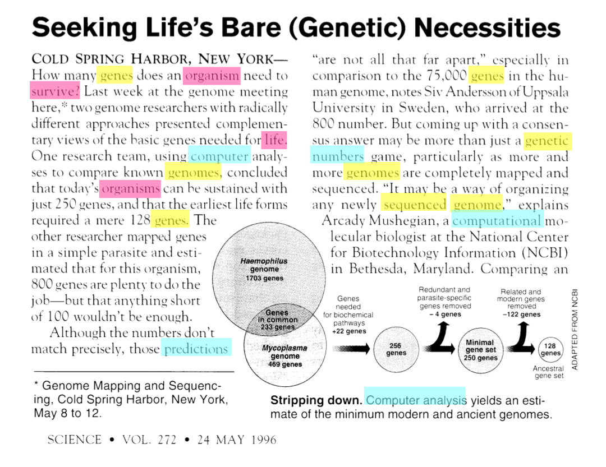
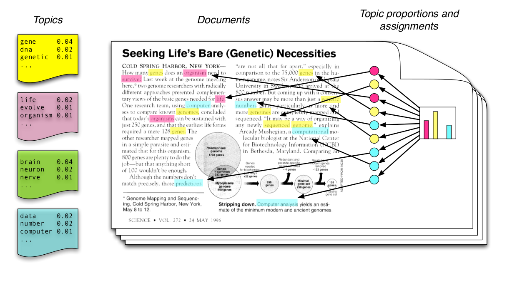
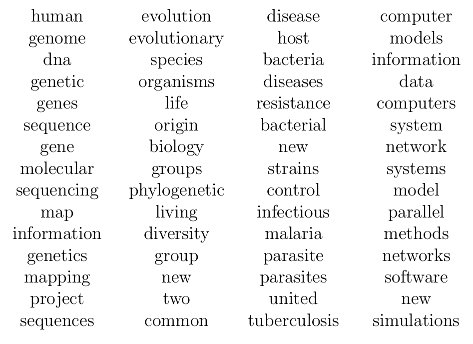
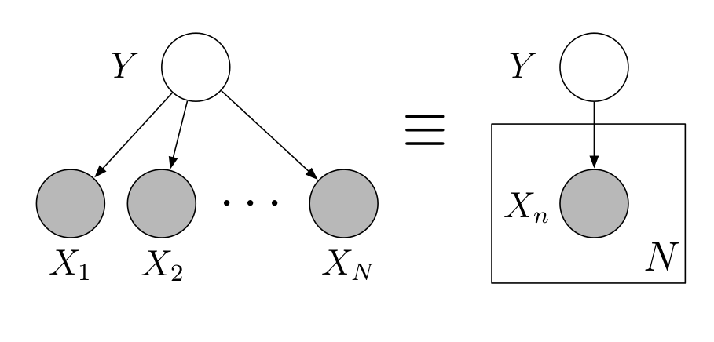
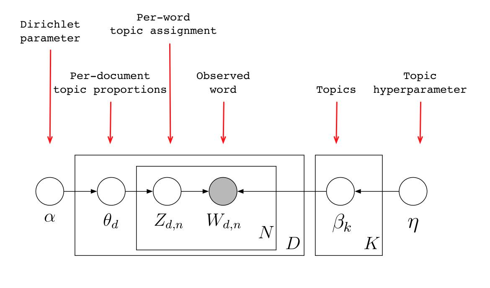
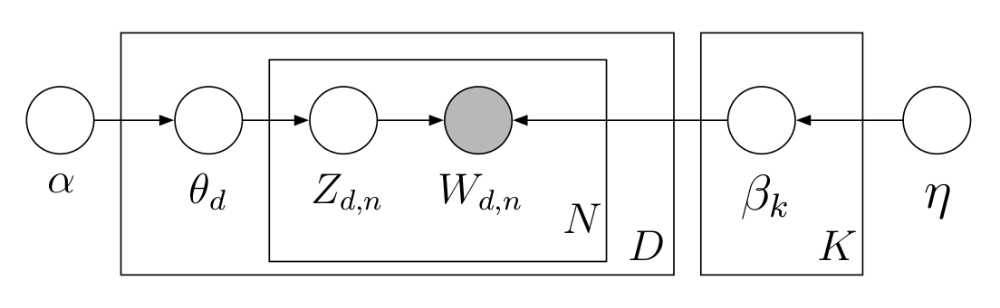

Wprowadzenie do modelu
ukrytej alokacji Dirichleta
(na podstawie Topic Models, David Blei)
Marcin Kosiński
7 Listopada 2016
Latent Dirichlet Allocation
Intuicja LDA

Model generujący

Najbardziej prawdopodobne słowa

Rozkład a posteriori

Model graficzny

- Wierzhołki to zmienne losowe.
- Krawędzie wskazują na możliwe zależności.
- Obserwowane zmienne są poszarzone.
- Płytki oznaczają powtórzenia w strukturze.
Model ukrytej alokacji Dirichleta

Model ukrytej alokacji Dirichleta

Cel - z kolekcji dokumentów wywnioskuj:
- Przynależność słowa do danego tematu \(z_{d,n}\)
- Proporcje tematów w danym dokumencie \(\theta_{d}\)
- Rozkłady tematów w całym korpusie \(\beta_{k}\)
Model ukrytej alokacji Dirichleta
Algorytmy używane do wyznaczenia rozkładu a posteriori
- Mean field variational methods (Blei et al., 2001, 2003)
- Expectation propagation (Minka and Lafferty, 2002)
- Collapsed Gibbs sampling (Griffiths and Steyvers, 2002)
- Collapsed variational inference (Teh et al., 2006)
Rozkład a posteriori
Rozkład a posteriori w LDA
Dla ustalonych \(\beta_{1:K}\) rozkład a posteriori dla dokumentu to
\[\frac{P(\theta|\alpha)\prod_{n=1}^{N}P(z_N|\theta)P(w_N|z_N,\beta_{1:K})}{\int_{\theta}P(\theta|\alpha)\prod_{n=1}^{N}\sum_{z=1}^{K}P(z_N|\theta)P(w_N|z_N,\beta_{1:K})}\]